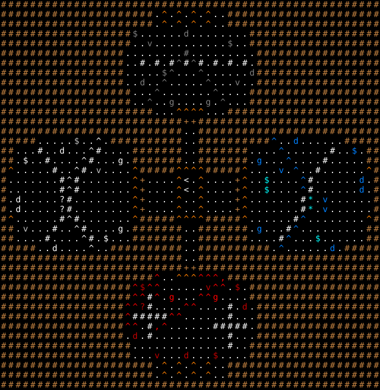

宝物庫 / The Vault
固定クエスト「宝物庫」の達成条件・報酬・地形・出現モンスター・クエストメッセージ。
Fixed quest "The Vault": objective, reward, terrain, monsters and messages.
← クエスト一覧 / All quests · 🏠 ホーム / Home
概要 / Overview
| 項目 | 内容 |
|---|---|
| 受注箇所 | テルモラ（BUILDING_1） |
| 種別 | アーティファクト発見 |
| 対象Lv（危険度） | 30 |
| 目標 | 候補アーティファクトから1つを発見（個別ページに一覧） |
| 前提クエスト | 3: ログルス使い |
| 報酬 | — |
| フラグ | PRESET / ONCE |
達成条件 / Objective
指定の アーティファクトを発見 すると達成。
対象アーティファクト候補 / Target artifact candidates
このクエストは下記 25 種 のうち、まだ生成されていない1つがランダムに対象アーティファクトとして選ばれる（parse_qtw_QR、src/floor/fixed-map-generator.cpp）。すべて生成済みの場合は「全滅」クエストに変化する。
クエストメッセージ / Messages
依頼時
街の外の蔵は小規模な要塞として使われていて、多くの貴重な品物が
蓄えられていました。しかし今ではモンスターどもに占拠されてしまっています。
まだ中にあるはずの伝説の武具を見つけ出し、我々の元に持ち帰って下さい！
武具を拾った時点でクエスト達成となるでしょう。しかし、どの部屋にあるか
分からないので、部屋を一つずつ見てまわって下さい。ここのモンスターは
手強く、また罠もしかけられています。くれぐれも注意して下さい。
町の外の蔵は小規模な要塞として使われていて、多くの貴重な品物が
蓄えられていました。しかし今ではモンスターどもに占拠されてしまっています。
多くの品物が失われましたが、せめて蔵だけでも取り返したいのです！
蔵を占拠するモンスターを全て打ち倒してください。
達成（報酬）時
その武器はお持ち下さい。これからの冒険の助けになるでしょう。
蔵の物品はお礼にお持ちください。空いた蔵は演劇場にしようと思います。
失敗時
あの武器を見つけられなかったのですか？おそらく、モンスターどもが持っていって
しまったんでしょうな。とても残念です。アレはこの街から悪を一掃する
のにとても役に立ったでしょうに。
出現モンスター / Monsters
地形・マップ / Map
初期位置と固定配置。記号の意味は下の凡例を参照。

ASCIIマップ
XXXXXXXXXXXXXXXXXXXXXXXXXXXXXXXXXXXXXXXXXXXXXXXXXXXX
XXXXXXXXXXXXXXXXXXXXX.+b+a+b+..XXXXXXXXXXXXXXXXXXXXX
XXXXXXXXXXXXXXXXXXXXX.+b+b+b+..XXXXXXXXXXXXXXXXXXXXX
XXXXXXXXXXXXXXXXXX$......5........XXXXXXXXXXXXXXXXXX
XXXXXXXXXXXXXXXXXX..v..........$..XXXXXXXXXXXXXXXXXX
XXXXXXXXXXXXXXXXX........R.........XXXXXXXXXXXXXXXXX
XXXXXXXXXXXXXXXXX..%.%.%8%8%.%.%.%.XXXXXXXXXXXXXXXXX
XXXXXXXXXXXXXXXXX.....$8...8......5XXXXXXXXXXXXXXXXX
XXXXXXXXXXXXXXXXX..5..8.....8...v..XXXXXXXXXXXXXXXXX
XXXXXXXXXXXXXXXXXX...8.......8....XXXXXXXXXXXXXXXXXX
XXXXXXXXXXXXXXXXXX..8..o....o.8...XXXXXXXXXXXXXXXXXX
XXXXXXXXXXXXXXXXXXXXX...++++...XXXXXXXXXXXXXXXXXXXXX
XXXXXXXXXXXXXXXXXXXXXXXXXDDXXXXXXXXXXXXXXXXXXXXXXXXX
XXXXXXXXXXXXXXXXXXXXXXXXX..XXXXXXXXXXXXXXXXXXXXXXXXX
XXXXX.....O..9.XXXXXXXXXX..XXXXXXXXXX7..6......XXXXX
XX...%..4...9%....XXXXXXX..XXXXXXX....7......%..S.XX
XX.d..%....9%...g.XXXXXXX..XXXXXXX.s...7....%.....XX
X+.....%..9%.c....+XXXXX++++XXXXX+....w.7..%......+X
Xb......%9%.......+D....+<.+....D+..m....7%......6aX
Xb......%9%.......+D....+<.+....D+..m....7%......6bX
Xa4.....M%........+D....+..+....D+.......%*.w.....bX
Xb4.....M%........+D....+..+....D+.......%*.w.....bX
X+......%9%.......+XXXXX++++XXXXX+......%7........+X
XX.c...%..9%....g.XXXXXXX..XXXXXXX.s...%7.........XX
XX....%....9%.d...XXXXXXX..XXXXXXX....%7...m......XX
XXXXX..4....9..XXXXXXXXXX..XXXXXXXXXX.7......6.XXXXX
XXXXXXXXXXXXXXXXXXXXXXXXX..XXXXXXXXXXXXXXXXXXXXXXXXX
XXXXXXXXXXXXXXXXXXXXXXXXXDDXXXXXXXXXXXXXXXXXXXXXXXXX
XXXXXXXXXXXXXXXXXXXXX^..+++^^^@XXXXXXXXXXXXXXXXXXXXX
XXXXXXXXXXXXXXXXXX^1^^......f^^.G.XXXXXXXXXXXXXXXXXX
XXXXXXXXXXXXXXXXXX^^%^.r...^^r....XXXXXXXXXXXXXXXXXX
XXXXXXXXXXXXXXXXX^^!%....^^....%.3.XXXXXXXXXXXXXXXXX
XXXXXXXXXXXXXXXXX^%%%%%^^......%...XXXXXXXXXXXXXXXXX
XXXXXXXXXXXXXXXXX^^.%@^......%%%%%.XXXXXXXXXXXXXXXXX
XXXXXXXXXXXXXXXXX.3.%..........%...XXXXXXXXXXXXXXXXX
XXXXXXXXXXXXXXXXXX.............%..XXXXXXXXXXXXXXXXXX
XXXXXXXXXXXXXXXXXX...f...3...u....XXXXXXXXXXXXXXXXXX
XXXXXXXXXXXXXXXXXXXXX.+b+b+a+..XXXXXXXXXXXXXXXXXXXXX
XXXXXXXXXXXXXXXXXXXXX.+b+b+b+..XXXXXXXXXXXXXXXXXXXXX
XXXXXXXXXXXXXXXXXXXXXXXXXXXXXXXXXXXXXXXXXXXXXXXXXXXX
地形の凡例
| 記号 | 表示 | 地形 / 内容 |
|---|---|---|
X |
#（Light Brown） | 永久岩の壁 |
. |
.（White） | 床 |
+ |
^（Orange） | 奇妙なルーン |
b |
.（White） | 床 |
a |
.（White） | 床 |
% |
#（White） | 花崗岩の壁 |
8 |
^（Gray） | 落とし穴 |
D |
+（Light Brown） | ドア |
9 |
^（White） | トラップ・ドア |
7 |
^（Blue） | ピラニア・トラップ |
< |
<（White） | 上り階段 |
^ |
^（Light Red） | 警報装置 |
🤖 この解説ページは
tools/generate-wiki.mjsにより生成されています（出典:lib/edit/quests/*.txt,lib/edit/QuestPreferences.txt）。手動で編集しないでください — 変更は次回の再生成で上書きされます。内容の修正は生成スクリプトを編集してください。 生成 / Generated: 2026-07-09 08:50 UTC · hengbandfb8802bf02·tools/generate-wiki.mjs